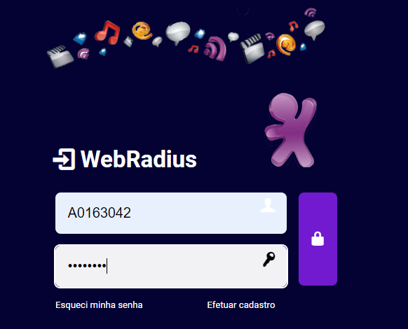

Guia básico do WebRadius
Para abrir o WebRadius é necessário fazer login com sua matricula (EX: A0163042) e com sua senha.
Como realizar baixa de uma carga:
- Clicar em MENU
- Depois clicar em CARGAS
- Após clicar em BAIXA
Logo em seguida aparecerá a mensagem "operation sucessful", isso significa que a baixa foi feita com sucesso.

Como realizar alta de uma carga:
- Clicar em MENU
- Depois clicar em CARGAS
- Após clicar em ALTA
Após é necessário preencher as informações como no print a baixo e clicar em efetuar alta.

Logo em seguida aparecerá a mensagem "operation sucessful", isso significa que a alta foi feita com sucesso.
Connect info de cada velocidade::
Como realizar o calculo de CANG:
- Clicar em MENU
- Depois clicar em CALCULO NASPORTE
- Clicar em CANG/FUSION
- Após preencha as informações como na imagem a baixo:
As informações necessárias para preencher os campos você consegue nas seguintes abas do SDU ou do WISE:

Depois de clicar em consultar vai abrir uma tela com o nasport calculado, assim como na imagem a baixo